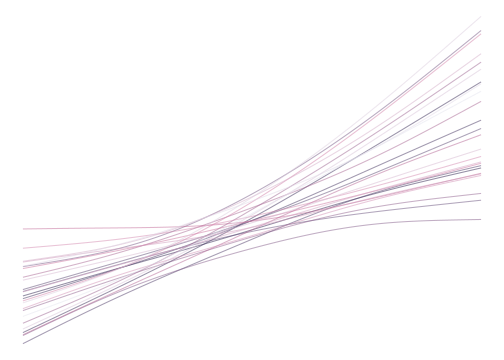
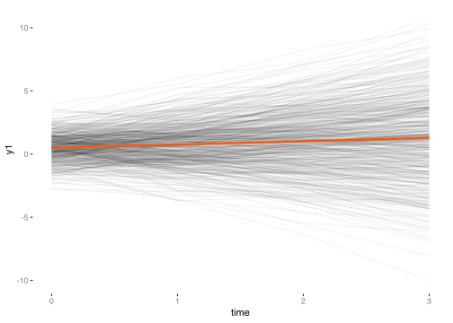

Latent Growth Curves

Latent growth curve (LGC) models are in a sense, just a different form of the very commonly used mixed model framework. In some ways they are more flexible, mostly in the standard structural equation modeling framework that allows for indirect, and other complex covariate relationships. In other ways, they are less flexible (e.g. requiring balanced data, estimating nonlinear relationships, data with many time points, dealing with time-varying covariates). With appropriate tools there is little one can’t do with the normal mixed model approach relative to the SEM approach, and one would likely have easier interpretation. As such I’d recommend sticking with the standard mixed model framework unless you really need to.
That said, growth curve models are a very popular SEM technique, so it makes sense to become familiar with them. To best understand a growth curve model, I still think it’s instructive to see it from the mixed model perspective, where things are mostly interpretable from what you know from a SLiM.
Random effects
Often data is clustered, e.g. students within schools or observations for individuals over time. The standard linear model assumes independent observations, and in these situations we definitely do not have that.
One very popular way to deal with these are a class of models called mixed effects models, or simply mixed models. They are mixed, because there is a mixture of fixed effects and random effects. The fixed effects are the regression coefficients one has in standard modeling approaches.
The random effects allow each cluster to have its own unique effect in addition to the overall fixed effect. This is simply a random deviation, almost always normally distributed in practice, from the overall intercept and slopes. Mixed models are a balanced approach between ignoring these unique contributions, and over-contextualizing by running separate regressions for every cluster.
Model formality
The following depicts a mixed model from a multilevel modeling context, which is just using a mixed model with possibly multiply nested grouping structures. The cluster that produce the random effects do not have to be hierarchical however, we just use the depiction here as it may be easier than the matrix approach.
As an example, consider the case of repeated measures within an individual or individuals clustered within a geographic region. To model some target variable \(y\), within a group/cluster, each observation \(i\) in that cluster \(c\), will have a cluster specific intercept:
\[y_{ic} = b_{0c} + b_1*X_{ic} + e_{ic}\]
At this point it looks like a standard regression, and is conceptually. In addition, the cluster specific intercepts have overall means (the fixed effect) plus some cluster specific deviation (random effect). These two can be thought of as additional regression models for the intercepts and slopes.
\[b_{0c} = b_0 + u_c\]
These random effects \(u\) are typically assumed normally distributed with some standard deviation, just like our ‘error’.
\[u_c \sim N(0, \tau)\]
\[e_{ic} \sim N(0, \sigma)\]
Plugging in the cluster level model to the initial model, we get the following:
\[y_{ic} = [b_0 + u_c] + b1 * X_{ic} + e_{ic}\]
This is where the notion of ‘random coefficients’ comes from. We also might display the model as follows:
\[y_{ic} = b_0 + b_1 * X_i + [u_c + e_{ic}]\]
Now the focus is on a standard regression model with an additional source of variance.
This is just one depiction, we might allow the slope to vary also, have random effects from multiple clustering sources, cluster level covariates, allow the random intercepts and slopes to correlate, and a host of other interesting approaches. The goal here is to keep things within the standard regression context as much as possible.
Random Effects in SEM
As we’ve seen with other models, the latent variables are assumed normally distributed, usually with zero mean, and some estimated variance. Well so are the random effects in mixed models, and it’s through this that we can maybe start to get a sense of random effects as latent variables (or vice versa). Indeed, mixed models have ties to many other kinds of models (e.g. spatial, additive), because they too add a ‘random’ component to the model in some fashion.
Simulating Random Effects
Through simulation we can demonstrate conceptual understanding of mixed models, and be well on our way toward better understanding LGC models. We’ll have balanced data, with scores across four time-points for 500 individuals (subjects). We will only investigate the trend (‘growth’), and allow subject-specific intercepts and slopes.
We’ll have ‘fixed’ effects, i.e. our standard regression intercept and slope, set at .5 and .25 respectively. We’ll allow their associated subject-specific intercept and slope to have a slight correlation (.2), and as such we’ll draw them from a multivariate normal distribution (variance of 1 for both effects).
intercept = .5
slope = .25
randomEffectsCorr = matrix(c(1,.2,.2,1), ncol=2)
randomEffects = MASS::mvrnorm(n, mu=c(0,0), Sigma = randomEffectsCorr, empirical=T) %>%
data.frame()
colnames(randomEffects) = c('Int', 'Slope')Let’s take a look at the data thus far.
| Subject | time | Int | Slope |
|---|---|---|---|
| 1 | 0 | -1.4775 | 0.4536 |
| 1 | 1 | -1.4775 | 0.4536 |
| 1 | 2 | -1.4775 | 0.4536 |
| 1 | 3 | -1.4775 | 0.4536 |
| 2 | 0 | 0.6390 | -0.9525 |
| 2 | 1 | 0.6390 | -0.9525 |
| 2 | 2 | 0.6390 | -0.9525 |
| 2 | 3 | 0.6390 | -0.9525 |
| 3 | 0 | 0.7736 | 1.1377 |
| 3 | 1 | 0.7736 | 1.1377 |
Now, to get a target variable, we simply add the random effects for the intercept to the overall intercept, and likewise for the slopes. Note how I’m using subject as a row index. This will spread out the n random effects to n*timepoints total, while being constant within a subject. We’ll throw in some noise at the end with standard deviation equal to \(\sigma\).
sigma = .5
y1 = (intercept + randomEffects$Int[subject]) + # random intercepts
(slope + randomEffects$Slope[subject])*time + # random slopes
rnorm(n*timepoints, mean=0, sd=sigma)
d = data.frame(subject, time, y1)| subject | time | y1 |
|---|---|---|
| 1 | 0 | -1.5801 |
| 1 | 1 | -0.1231 |
| 1 | 2 | -0.3398 |
| 1 | 3 | 1.4511 |
| 2 | 0 | 1.4905 |
| 2 | 1 | -0.5164 |
| 2 | 2 | 0.2035 |
| 2 | 3 | -1.0807 |
| 3 | 0 | 0.9367 |
| 3 | 1 | 2.8842 |

Let’s estimate this as a mixed model first55 using the lme4 package. See if you can match the parameters from our simulated data to the output.
library(lme4)
mixedModel = lmer(y1 ~ time + (1 + time|subject), data=d) # 1 represents the intercept
## summary(mixedModel)Linear mixed model fit by REML ['lmerMod']
Formula: y1 ~ time + (1 + time | subject)
Data: d
REML criterion at convergence: 5833.3
Scaled residuals:
Min 1Q Median 3Q Max
-2.36211 -0.48276 0.02046 0.47515 2.84524
Random effects:
Groups Name Variance Std.Dev. Corr
subject (Intercept) 0.9999 0.9999
time 0.9898 0.9949 0.21
Residual 0.2382 0.4881
Number of obs: 2000, groups: subject, 500
Fixed effects:
Estimate Std. Error t value
(Intercept) 0.48986 0.04830 10.141
time 0.26400 0.04555 5.796Our fixed effects are at the values we set for the overall intercept and slope. The estimated random effects variances are at 1, the correlation near .2, and finally, our residual standard deviation is near the .5 value we set.
Running a Growth Curve Model
As before, we’ll use lavaan, but now the syntax will look a bit strange compared to what we’re used to with our prior SEM, because we have to fix the factor loadings to specific values in order to make it work. This also leads to non-standard output relative to other SEM models, as there is nothing to estimate for the many fixed parameters.
Specifically, we’ll have a latent variable representing the random intercepts, as well as one representing the random slopes. All loadings for the intercept factor are 156. The loadings for the effect of time are arbitrary, but should accurately reflect the time spacing, and typically it is good to start at zero, so that the zero has a meaningful interpretation.
As can probably be guessed, additionally our data needs to be in wide format, where each row represents a person and we have separate columns for each time point of the target variable, as opposed to the long format we used in the previous mixed model. We can use the spread function from tidyr to help with that.
subject time y1
1 1 0 -1.5801417
2 1 1 -0.1231067
3 1 2 -0.3397778
4 1 3 1.4511151
5 2 0 1.4904810
6 2 1 -0.5164371# also change the names, as usually things don't work well if they start with a
# number. yes, it is the 21st century.
dWide = d %>%
spread(time, y1) %>%
rename_at(vars(-subject), function(x) paste0('y', x))
head(dWide) subject y0 y1 y2 y3
1 1 -1.58014168 -0.1231067 -0.3397778 1.451115
2 2 1.49048096 -0.5164371 0.2034644 -1.080743
3 3 0.93670868 2.8842359 4.6893758 6.219357
4 4 -2.29755097 -2.6728027 -3.1374417 -3.934300
5 5 0.08520448 1.2338897 4.3629780 6.008491
6 6 1.05332405 0.9019989 1.5461479 1.518288Now we’re ready to run the model. Note that lavaan has a specific function, growth, to use for these models. It doesn’t spare us any effort for the model syntax, but does make it unnecessary to set various things with the sem function.
model = "
# intercept and slope with fixed coefficients
i =~ 1*y0 + 1*y1 + 1*y2 + 1*y3
s =~ 0*y0 + 1*y1 + 2*y2 + 3*y3
"
growthCurveModel = growth(model, data=dWide)
summary(growthCurveModel)lavaan 0.6-2 ended normally after 42 iterations
Optimization method NLMINB
Number of free parameters 9
Number of observations 500
Estimator ML
Model Fit Test Statistic 10.616
Degrees of freedom 5
P-value (Chi-square) 0.060
Parameter Estimates:
Information Expected
Information saturated (h1) model Structured
Standard Errors Standard
Latent Variables:
Estimate Std.Err z-value P(>|z|)
i =~
y0 1.000
y1 1.000
y2 1.000
y3 1.000
s =~
y0 0.000
y1 1.000
y2 2.000
y3 3.000
Covariances:
Estimate Std.Err z-value P(>|z|)
i ~~
s 0.226 0.050 4.512 0.000
Intercepts:
Estimate Std.Err z-value P(>|z|)
.y0 0.000
.y1 0.000
.y2 0.000
.y3 0.000
i 0.487 0.048 10.072 0.000
s 0.267 0.045 5.884 0.000
Variances:
Estimate Std.Err z-value P(>|z|)
.y0 0.287 0.041 6.924 0.000
.y1 0.219 0.021 10.501 0.000
.y2 0.185 0.027 6.748 0.000
.y3 0.357 0.065 5.485 0.000
i 0.977 0.076 12.882 0.000
s 0.969 0.065 14.841 0.000Most of the output is blank, which is needless clutter, but we do get the same five parameter values we are interested in though.
Start with the ‘intercepts’:
Intercepts:
Estimate Std.Err Z-value P(>|z|)
i 0.487 0.048 10.072 0.000
s 0.267 0.045 5.884 0.000It might be odd to call your fixed effects ‘intercepts’, but it makes sense if we are thinking of it as a multilevel model as depicted previously, where we actually broke out the random effects as a separate model. The estimates here are pretty much spot on with our mixed model estimates, which are identical to just the standard regression estimates.
(Intercept) time
0.4898598 0.2640034
Call:
lm(formula = y1 ~ time, data = d)
Coefficients:
(Intercept) time
0.4899 0.2640 Now let’s look at the variance estimates. The estimation of residual variance for each y in the LGC distinguishes the two approaches, but not necessarily so. We could fix them to be identical here, or conversely allow them to be estimated in the mixed model framework. Just know that’s why the results are not identical (to go along with their respective estimation approaches, which are also different by default). Again though, the variances are near one, and the correlation between the intercepts and slopes is around the .2 value.
Covariances:
Estimate Std.Err Z-value P(>|z|)
i ~~
s 0.226 0.050 4.512 0.000
Variances:
Estimate Std.Err Z-value P(>|z|)
y0 0.287 0.041 6.924 0.000
y1 0.219 0.021 10.501 0.000
y2 0.185 0.027 6.748 0.000
y3 0.357 0.065 5.485 0.000
i 0.977 0.076 12.882 0.000
s 0.969 0.065 14.841 0.000 Groups Name Std.Dev. Corr
subject (Intercept) 0.99994
time 0.99488 0.208
Residual 0.48806 The differences provide some insight. LGC by default assumes heterogeneous variance for each time point. Mixed models by default assume the same variance for each time point, but can allow them to be estimated separately in most modeling packages.
As an example, if we fix the variances to be equal, the models are now identical.
model = "
# intercept and slope with fixed coefficients
i =~ 1*y0 + 1*y1 + 1*y2 + 1*y3
s =~ 0*y0 + 1*y1 + 2*y2 + 3*y3
y0 ~~ resvar*y0
y1 ~~ resvar*y1
y2 ~~ resvar*y2
y3 ~~ resvar*y3
"
growthCurveModel = growth(model, data=dWide)
summary(growthCurveModel)lavaan 0.6-2 ended normally after 27 iterations
Optimization method NLMINB
Number of free parameters 9
Number of equality constraints 3
Number of observations 500
Estimator ML
Model Fit Test Statistic 17.105
Degrees of freedom 8
P-value (Chi-square) 0.029
Parameter Estimates:
Information Expected
Information saturated (h1) model Structured
Standard Errors Standard
Latent Variables:
Estimate Std.Err z-value P(>|z|)
i =~
y0 1.000
y1 1.000
y2 1.000
y3 1.000
s =~
y0 0.000
y1 1.000
y2 2.000
y3 3.000
Covariances:
Estimate Std.Err z-value P(>|z|)
i ~~
s 0.207 0.050 4.170 0.000
Intercepts:
Estimate Std.Err z-value P(>|z|)
.y0 0.000
.y1 0.000
.y2 0.000
.y3 0.000
i 0.490 0.048 10.151 0.000
s 0.264 0.046 5.802 0.000
Variances:
Estimate Std.Err z-value P(>|z|)
.y0 (rsvr) 0.238 0.011 22.361 0.000
.y1 (rsvr) 0.238 0.011 22.361 0.000
.y2 (rsvr) 0.238 0.011 22.361 0.000
.y3 (rsvr) 0.238 0.011 22.361 0.000
i 0.998 0.074 13.478 0.000
s 0.988 0.066 15.076 0.000Compare to the lme4 output.
Groups Name Variance Corr
subject (Intercept) 0.99989
time 0.98979 0.208
Residual 0.23820 In addition, the random coefficients estimates from the mixed model perfectly correlate with those of the latent variables. I obtained the latent variable scores using lavPredict.
Int_mix Slope_mix Int_lgc Slope_lgc
1 -1.12 0.72 -1.12 0.72
2 0.90 -0.61 0.90 -0.61
3 1.08 1.72 1.08 1.72
4 -1.86 -0.68 -1.86 -0.68
5 0.06 1.94 0.06 1.94
6 0.87 0.24 0.87 0.24 Int_mix Slope_mix Int_lgc Slope_lgc
Int_mix 1.00 0.29 1.00 0.29
Slope_mix 0.29 1.00 0.29 1.00
Int_lgc 1.00 0.29 1.00 0.29
Slope_lgc 0.29 1.00 0.29 1.00Both approaches allow those residuals to covary, though it gets tedious in SEM syntax, while it is a natural extension in the mixed model framework. Here is the syntax for letting each time point covary with the next, at least, what it might be. It’s unclear if lavaan actually will do this, and the syntax here roughly follows the Mplus manual, except that we can’t define new variables in lavaan as there. As such, the hope is that the a parameter should equal resvar*corr as in the Mplus syntax, but there’s not a clear way to fix it to be. It seems consistent here and with larger sample sizes.
model = "
# intercept and slope with fixed coefficients
i =~ 1*y0 + 1*y1 + 1*y2 + 1*y3
s =~ 0*y0 + 1*y1 + 2*y2 + 3*y3
# all of the following is needed for what are essentially only two parameters
# to estimate- resvar and correlation (the latter defined explicitly here)
y0 ~~ resvar*y0
y1 ~~ resvar*y1
y2 ~~ resvar*y2
y3 ~~ resvar*y3
# timepoints 1 step apart; technically the covariance is e.g. a*sqrt(y0)*sqrt(y1),
# but since the variances are constrained to be equal, we don't have to be so verbose.
y0 ~~ a*y1
y1 ~~ a*y2
y2 ~~ a*y3
# two steps apart
y0 ~~ b*y2
y1 ~~ b*y3
# three steps apart
y0 ~~ c*y3
# fix parameters according to ar1
b == a^2
c == a^3
"lavaan 0.6-2 ended normally after 287 iterations
Optimization method NLMINB
Number of free parameters 15
Number of observations 500
Estimator ML
Model Fit Test Statistic 14.881
Degrees of freedom 7
P-value (Chi-square) 0.038
Parameter Estimates:
Information Expected
Information saturated (h1) model Structured
Standard Errors Standard
Latent Variables:
Estimate Std.Err z-value P(>|z|) Std.lv Std.all
i =~
y0 1.000 0.980 0.884
y1 1.000 0.980 0.603
y2 1.000 0.980 0.399
y3 1.000 0.980 0.291
s =~
y0 0.000 0.000 0.000
y1 1.000 0.991 0.610
y2 2.000 1.983 0.808
y3 3.000 2.974 0.882
Covariances:
Estimate Std.Err z-value P(>|z|) Std.lv Std.all
.y0 ~~
.y1 (a) 0.029 0.021 1.397 0.162 0.029 0.110
.y1 ~~
.y2 (a) 0.029 0.021 1.397 0.162 0.029 0.110
.y2 ~~
.y3 (a) 0.029 0.021 1.397 0.162 0.029 0.110
.y0 ~~
.y2 (b) 0.001 0.001 0.698 0.485 0.001 0.003
.y1 ~~
.y3 (b) 0.001 0.001 0.698 0.485 0.001 0.003
.y0 ~~
.y3 (c) 0.000 0.000 0.466 0.641 0.000 0.000
i ~~
s 0.217 0.051 4.293 0.000 0.223 0.223
Intercepts:
Estimate Std.Err z-value P(>|z|) Std.lv Std.all
.y0 0.000 0.000 0.000
.y1 0.000 0.000 0.000
.y2 0.000 0.000 0.000
.y3 0.000 0.000 0.000
i 0.492 0.048 10.195 0.000 0.502 0.502
s 0.263 0.046 5.765 0.000 0.265 0.265
Variances:
Estimate Std.Err z-value P(>|z|) Std.lv Std.all
.y0 (rsvr) 0.267 0.025 10.714 0.000 0.267 0.218
.y1 (rsvr) 0.267 0.025 10.714 0.000 0.267 0.101
.y2 (rsvr) 0.267 0.025 10.714 0.000 0.267 0.044
.y3 (rsvr) 0.267 0.025 10.714 0.000 0.267 0.024
i 0.960 0.079 12.155 0.000 1.000 1.000
s 0.983 0.066 14.883 0.000 1.000 1.000
Constraints:
|Slack|
b - (a^2) 0.000
c - (a^3) 0.000Linear mixed-effects model fit by maximum likelihood
Data: d
AIC BIC logLik
5836.589 5875.795 -2911.295
Random effects:
Formula: ~1 + time | subject
Structure: General positive-definite, Log-Cholesky parametrization
StdDev Corr
(Intercept) 0.9768961 (Intr)
time 0.9907610 0.225
Residual 0.5215351
Correlation Structure: AR(1)
Formula: ~time | subject
Parameter estimate(s):
Phi
0.1235872
Fixed effects: y1 ~ time
Value Std.Error DF t-value p-value
(Intercept) 0.4918555 0.04827394 1499 10.188841 0
time 0.2628092 0.04559937 1499 5.763439 0
Correlation:
(Intr)
time 0.121
Standardized Within-Group Residuals:
Min Q1 Med Q3 Max
-2.29559946 -0.45932855 0.01075219 0.45334542 2.76051404
Number of Observations: 2000
Number of Groups: 500 Thinking more generally about regression
In fact, your standard regression is already equipped to handle heterogeneous variances and a specific correlation structure for the residuals. The linear model can be depicted as the following:
\[y \sim N(X\beta, \Sigma)\]
\(X\beta\) represents the linear predictor, i.e. the linear combination of your predictors, and a big, N by N covariance matrix \(\Sigma\). Thus the target variable \(y\) is multivariate normal with mean vector \(X\beta\) and covariance \(\Sigma\).
SLiMs assume that the covariance matrix is constant diagonal. A single value on the diagonal, \(\sigma^2\), and zeros on the off-diagonals. Mixed models, and other approaches as well, can allow the covariance structure to be specified in myriad ways, and it ties them to still other models, which in the end produces a very flexible modeling framework.
More on LGC
LGC are non-standard SEM
In no other SEM situation are you likely to fix so many parameters or think about your latent variables in this manner. This can make for difficult interpretations relative to the mixed model (unless you are aware of the parallels).
Residual correlations
Typical models that would be investigated with LGC have correlated residuals as depicted above.
Nonlinear time effect
A nonlinear time effect can be estimated if we don’t fix all the parameters for the slope factor. As an example, the following would actually estimate the loadings for times in between the first and last point.
It may be difficult to assess nonlinear relationships unless one has many time points57, and even then, one might get more with an additive mixed model approach.
Growth Mixture Models
Adding a latent categorical variable would allow for different trajectories across the latent groups. Most clients that I’ve seen typically did not have enough data to support it, as one essentially can be estimating a whole growth model for each group. Some might restrict certain parameters for certain groups, but given that the classes are a latent construct to be discovered, there would not be a theoretical justification to do so, and it would only complicate interpretation at best. Researchers rarely if ever predict test data, nor provide evidence that the clusters hold up with alternate data. In addition, it seems that typical interpretation of the classes takes on an ordered structure (e.g. low, medium, and high), which means they just have a coarsely measured continuous latent variable. In other cases, the groups actually reflect intact groups represented by covariates they have not included in the data (or perhaps are an interaction of those). Had they started under the assumption of a continuous latent variable, it might have made things easier to interpret and estimate.
As of this writing, Mplus is perhaps the only SEM software used for these Growth Mixture Models, and it requires yet another syntax style, and, depending on the model you run, some of the most confusing output you’ll ever see in SEM. Alternatives in R include flexmix (demonstrated in the Mixture Models Module) for standard mixture modeling (including mixed effects models), as well as the R package OpenMx.
Other covariates
Cluster level
To add a cluster-level covariate, for a mixed model, it looks something like this (ignoring lowest level subscript):
standard random intercept
\[y = b_{0c} + b1*\mathrm{time} + e \] \[b_{0c} = b_0 + u_c\]
Plugging in becomes: \[y = b_0 + b1*\mathrm{time} + u_c + e \]
subject level covariate added
\[b_{0c} = b_0 + c1*\mathrm{sex} + u_c\]
But if we plug that into our level 1 model, it just becomes: \[y = b_0 + c1*\mathrm{sex} + b1*\mathrm{time} + u_c + e\]
In our previous modeling syntax it would look like this:
We’d have a fixed effect for sex and interpret it just like in the standard setting. Similarly, if we had a time-varying covariate, say socioeconomic status, it’d look like the following:
Though we could have a random slope for SES if we wanted. You get the picture. Most of the model is still standard regression interpretation.
With LGC, there is a tendency to interpret the model as an SEM, and certainly one can. But adding additional covariates typically causes confusion for those not familiar with mixed models. We literally do have to regress the intercept and slope latent variables on cluster level covariates as follows.
model.syntax <- '
# intercept and slope with fixed coefficients
i =~ 1*y1 + 1*y2 + 1*y3 + 1*y4
s =~ 0*y1 + 1*y2 + 2*y3 + 3*y4
# regressions
i ~ x1 + x2
s ~ x1 + x2
'Applied researchers commonly have difficulty interpreting the model due to past experience with SEM. While these are latent variables, they aren’t just latent variables or underlying constructs. It doesn’t help that the output can be confusing, because now one has an ‘intercept for your intercepts’ and an ‘intercept for your slopes’. In the multilevel context it makes sense, but there you know ‘intercept’ is just ‘fixed effect’.
Time-varying covariates
With time varying covariates, i.e. those that can have a different value at each time point, the syntax starts to get tedious. Here we add just one such covariate, \(c\).
model.syntax <- '
# intercept and slope with fixed coefficients
i =~ 1*y1 + 1*y2 + 1*y3 + 1*y4
s =~ 0*y1 + 1*y2 + 2*y3 + 3*y4
# regressions
i ~ x1 + x2
s ~ x1 + x2
# time-varying covariates
y1 ~ c1
y2 ~ c2
y3 ~ c3
y4 ~ c4
'
fit <- growth(model.syntax, data=Demo.growth)
summary(fit)Now imagine having just a few of those kinds of variables as would be common in most longitudinal settings. In the mixed model framework one would add them in as any covariate in a regression model, and each covariate would be associated with a single fixed effect. In the LGC framework, one has to regress each time point for the target variable on its corresponding predictor time point. It might take a few paragraphs to explain the coefficients for just a handful of covariates. If you fix them to a single value, you would duplicate the mixed model, but the syntax requires even more tedium.
Some Differences between Mixed Models and Growth Curves
Random slopes
One difference seen in comparing LGC models vs. mixed models is that in the former, random slopes are always assumed, whereas in the latter, one would typically see if it’s worth adding random slopes in the first place, or simply not assume them. There is currently a fad of ‘maximal’ mixed models in some disciplines, that would require testing every possible random effect. All I can say is good luck with that.
Time-varying covariates
LGC depictions are always showing a time*x interaction with time-varying covariates, i.e. that the effect of the covariate changes depending on the time point. The mixed model, like every other model you run, does not assume any interaction unless you explicitly ask for it. As mentioned, you can fix the path value to be constant across time if you don’t want an interaction.
Unequal variances
One more thing LGC assumes that would not be in standard mixed model settings is unequal variances across time points, i.e. you estimate a separate variance for each time point. And once again, if you even had reason to consider this in the mixed model setting you could, and then you would compare that model to the equal variance model for best performance. Almost every LGC you see simply estimates those additional variances whether it’s needed or not.
Wide vs. long
The SEM framework is inherently multivariate, and your data will need to be in wide format. This isn’t too big of a deal until you have many time-varying covariates, then the model syntax is tedious and you end up having the number of parameters to estimate climb rapidly.
Sample size
As we have noted before, SEM is inherently a large sample technique. The growth curve model does not require as much for standard approaches, but may require a lot more depending on the model one tries to estimate. In my own simulations, I haven’t seen too much difference compared to mixed models even for notably small sample sizes, but those were for very simple models.
Number of time points
A basic growth curve model requires four time points to incorporate the flexibility that would make it worthwhile. Mixed models don’t have the restriction (outside of the obvious need of two).
Balance
Mixed models can run even if some clusters have a single value. SEM requires balanced data and so one will always have to estimate missing values or drop them. Whether this missingness can be ignored in the standard mixed model framework is a matter of some debate in certain circles.
Numbering the time points
Numbering your time from zero makes sense in both worlds. This leads to the natural interpretation that the intercept is the mean for your first time point. In other cases having a centered value would make sense, or numbering from 0 to a final value of 1, which would mean the slope coefficient represents the change over the whole time span.
Other stuff
Parallel Processes
In the appendix I provide an example of a parallel process in which we posit two growth curves at the same time, with possible correlations among them. This could be accomplished quite easily with a standard mixed model in the Bayesian framework with a multivariate response, or with a standard mixed model in long format with an observation(s) pertaining to each outcome and appropriate covariance structure to account for it. I’ll have to come back to that later.
Cross-lagged Models
Sometimes you’ll come across what are called cross-lagged models. These are path models applied to longitudinal data. Here’s an example regarding two variables and three time points.
To be honest, the only reason I can think of to do something like this is if one isn’t familiar with mixed models, growth curves, or bayesian networks. You can imagine what this would look like if we allow for lingering effects from earlier times to later ones (i.e. more lags), have more time points, have residual correlations at specific time points, and several more variables, as would be typical in any plausible modeling setting. The result would be unwieldy at best. Some using these models are interested in the stability of a measure over time. However, if this in question, one should probably be using factor analytic techniques to assess the reliability of the measure. In general, you’d always have a better option than a cross-lagged model in my opinion.
Summary
Growth curve modeling is an alternative way to do what is very commonly accomplished through mixed models, and allow for more complex models than typically seen for standard mixed models. One’s default should probably be to use the more common, and probably more flexible (in most situations), mixed modeling tools, where there are packages in R that could handle nonlinear effects, mediation and multivariate outcomes for mixed models. I have other documents regarding mixed models on my website and code at GitHub, including a document that does more comparison to growth curve models. However, the latent variable approach may provide what you need, and at the very least gives you a fresh take on the standard mixed model perspective.
R Packages Used
- lavaan
- lme4
- nlme
One can set REML=F so as to use standard maximum likelihood and make the results directly comparable to lavaan.↩
Those familiar with the model matrix for regression will recognize ‘intercept as 1’.↩
I personally cannot see bends with only four time points, at least such that I couldn’t just as easily posit a linear trend.↩